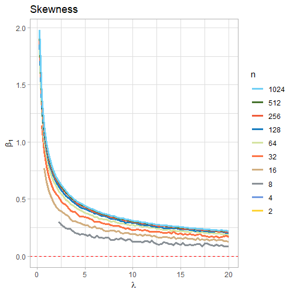
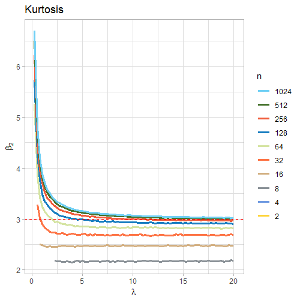
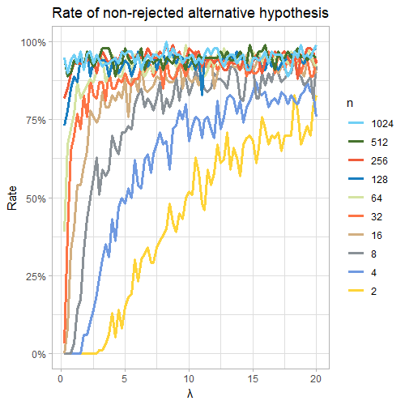

Trabajo académico
Esta entrada es una adaptación al formato blog de un póster que presenté en el XXIX Simposio Internacional de Estadística que se llevó a cabo en septiembre de 2022 en Manizales, Colombia.Al final se adjunta el póster que se presentó en este evento académico.
Este trabajo fue presentado por:
- Simón Cuartas Rendón
- Freddy Hernández Barajas
Resumen
El Teorema del Límite Central (TLC) es uno de los más importantes en estadística, y para su aplicación es común considerar que tamaños muestrales mayores a treinta (si el tamaño muestral es \(n\), entonces \(n \geq 30\)) son suficientes para usar este teorema. Sin embargo, esto no es verdad en general, especialmente cuando se tienen distribuciones como la Poisson, que es asimétrica cuando la media poblacional es pequeña, y no hay claridad de cuál es el tamaño de muestra mínimo suficiente para casos como este. Así, usando simulación estadística con ayuda de R, es posible estudiar cuáles pares de tamaños y medias muestrales son adecuados para usar el TLC mediante una generación de 400 muestras para 12 tamaños de muestra y 80 medias poblaciones diferentes, usando a su vez el test de normalidad de Lilliefors y repitiendo esto 2150 veces para cada par de tamaño y media poblacional para calcular una tasa de no rechazo de la hipótesis nula usando el valor p con un nivel de significancia de \(\alpha = 0.05\). Finalmente, se encontró que para muestras muy pequeñas, tamaños de muestra mayores de 1000 unidades son preferibles sin importar la media poblacional asociada.
Introducción
Sea \(X_1, \ X_2, \dots\) una sucesión de variables independientes e idénticamente distribuidas (i.i.d.), cuya función generadora de momentos (f.g.m.) existe en un vecindario alrededor de cero, esto es \(M_{X_n} (t)\) existe para $|t| < h, \ h > 0$. Supóngase que \(\mathbb{E} [X_n] = \mu\) y que $\mathbb{Var} [X_n] = \sigma^2 < \infty$. Considérese \(\bar{X}_n = \frac{1}{n} \sum_{i=1}^{n} X_i\) y \(G_n (x)\) como la función de distribución acumulada (f.d.a.) de \(Z_n = \frac{\sqrt{n} (\bar{X}_m - \mu )}{\sigma}\). Entonces:
\[\lim_{n \to x} G_n(x) = \int_{-\infty}^{x} \frac{1}{\sqrt{2 \pi}} \exp \left[ - \frac{y^2}{2} \right] \text{dy}\]
Lo anterior implica que \(Z_n = \frac{\sqrt{n} (\bar{X} - \mu)}{\sigma} \ \stackrel{\text{d}}{\rightarrow} \ Z\), con \(Z \sim \text{N} (0, \ \sigma^2)\).
En la práctica, no es posible tener una muestra de tamaño infinito, pero se pueden tomar muestras que sean lo suficientemente grandes como para asegurar buenas aproximaciones asintóticas. Varios autores han considerado que para distribuciones simétricas pueden tener su muestra muestral distribuyéndose como una normal cuando el tamaño muestral es \(n \geq 30\), pero es claro que las distribuciones Poisson con medias poblacionales pequeñas no satisfacen esta propiedad, de manera que el objetivo es explorar con el uso de la simulación estadística cuáles tamaños muestrales pueden ser considerados lo suficientemente grandes de manera que sea adecuada la aplicación del Teorema del Límite Central.
¿Cómo fueron realizadas las simulaciones?
Todas las simulaciones se corrieron usando el lenguaje de programación estadístico R. Para lograr esto, se creó una función que recibiera tres parámetros: \(m\), que es el número de muestras aleatorias a considerar para cada par de tamaño de muestra y media poblacional (y que por defecto se situó en \(m = 500\)), \(n\), que es el tamaño de muestra que tendrían cada una de estas muestras aleatorias y \(\lambda\), que es la media poblacional asociada a estas muestras. Generadas las muestras, se calcularon las medias muestrales \(\bar{X}_n\) para cada muestra, y con esto fue posible determinar si el conjunto de \(m\) medias muestrales cumplían o no el test de normalidad de Lilliefors, que parte del siguiente par de hipótesis:
\[ \begin{cases} H_0: \text{Las medias muestrales fueron obtenidas de una distribución normal.} \\ H_1: \text{Las medias muestrales } \textbf{no } \text{fueron obtenidas de una distribución normal.} \end{cases} \]
Además, considerando que este es un problema que involucra el estudio de la simetría de las distribuciones generadas, se realizó el cálculo de los coeficientes muestrales de curtosis (\(b_2\)) y de asimetría (\(b_1\)) como se muestra a continuación:
$$b_1 = \frac{m_3}{s^3} \ \ \ \ \ \ \ \ \ \ \ \ b_2 = \frac{m_4}{s^4}$$
donde \(m_i\) es el $i$-ésimo momento central y \(s^2\) es la varianza muestral.
Vale la pena recordar que una función normal tiene un coeficiente de curtosis poblacional de \(\beta_2 = 3\) y un coeficiente de asimetría poblacional de \(\beta_2 = 0\); luego, se espera que en la medida que la media poblacional usada para generar diferentes muestras aleatorias para cada tamaño muestral crezca, el coeficiente de curtosis se acercará a tres y el de asimetría a cero.
Además, se resalta que el valor de la estadística, el valor p y las medias truncadas al 10 % para la curtosis (para evitar valores extremos) y la asimetría fueron almacenados.
Ahora, se debe considerar que bajo circunstancias aleatorias, como las de este experimento, es importante repetir esta simulación muchas veces para cada par de media población y tamaño muestral, de forma que se pudiera chequear cuántas muestras aleatorias no rechazaron el test de normalidad de Lilliefors, así que la función recién descrita fue corrida 2150 veces para cada par de \(n\) y \(\lambda\), lo que implica que se obtuvo un total de \(2064000\) registros. Con esto en mente, los parámetros empleados para esta simulación fueron:
Doce diferentes tamaños de muestra: potencias de dos desde la primera hasta la décimo segunda potencia \((n = 2, 4, 8, \dots 2048, 4096)\).
Ochenta medias poblacionales distintas: desde 0.25 hasta 20 con saltos de 0.25 unidades \((\lambda = 0.25, 0.5, 0.75, \dots, 19.5, 19.75, 20)\).
Análisis de la asimetría para diferentes tamaños de muestra y medias poblacionales
Primero, es importante ver cómo la curtosis y la asimetría cambian de acuerdo con el valor de la media poblacional \(\lambda\) y el tamaño muestral \(n\).

Nótese que para todos los tamaños muestrales \(n\), la asimetría siempre es positiva y comienza tomando valores alejados de cero, indicando una asimetría positiva, lo cual es típico de las distribuciones Poisson, pero en la medida en que la media \(\lambda\) es más grande, el coeficiente de asimetría tiende a acercarse a cero, lo cual es positivo para la aplicación del TLC. Es importante anotar que este acercamiento a cero es más acelerado para medias muestrales para tamaños muestrales pequeños. Después, revisando el coeficiente de curtosis:

En este caso el objetivo es que el coeficiente de curtosis se acerque lo más posible a tres, que es el valor que tienen para esta estadística las distribuciones normales. Por tanto, en la figura 2 se puede observar que para tamaños muestrales pequeños esto no ocurre cuando la media poblacional también es pequeña, pero converge a tres rápidamente, especialmente para \(\lambda \geq 5\), pero este no es el caso para tamaños muestrales \(n \leq 64\), que convergen rápidamente a valores de curtosis menores a tres, lo que se asocia con distribuciones leptocúrticas, que tienen más valores atípicos de las distribuciones normales (esto se relaciona con colas más pesadas en sus distribuciones).
Esto permite que esperemos que para medias poblaciones pequeñas, el TLC funcione bien con tamaños muestrales pequeños, toda vez que para medias poblacionales pequeñas se requerirán tamaños muestrales muy grandes para siquiera considerar el uso del TLC.
Resultados
Con las simulaciones, se aplicó el test de normalidad de Lilliefors y se almacenaron los valores p. Estos tests fueron realizados considerando niveles de significancia de \(\alpha = 0.05\), y luego de verificó cuántas simulaciones tuvieron valores p mayores al nivel de significancia, permitiendo calcular una tasa de no rechazho de tests. Con esta información, es posible construir una gráfica como la que se exhibe en la figura 3.

La figura 3 muestra que cuando el tamaño muestral es pequeño, es difícil conseguir una tasa lo suficientemente buena como para considerar que el TLC está trabajando bien, especialmente para medias poblacionales pequeñas. Sin embargo, en la medida que el tamaño de muestra se hace más grande, el TLC comienza a trabajar para para tamaños muestrales tan grandes como 128 (en azul oscuro), pues tiene una tasa de no rechazo de la hipótesis de nula del \(80 \%\) aproximadamente cuando \(\lambda \approx 2.5\). Para un tamaño muestral de 256, la tasa de no rechazo está aún por debajo del \(30\%\). Por el contrario, esta tasa está sobre el \(95\%\) para tamaños muestrales de 2048 y 4096.
Conclusiones
Se puede verificar que treinta no es un número mágico para el uso del Teorema del Límite Central en todo tipo de distribuciones, y que tamaños muestrales mucho más grandes serán necesarios para distribuciones Poisson con medias poblacionales pequeñas, que finalmente dependerán de cuán pequeño es $\lambda$. De acuerdo con las simulaciones, un tamaño de muestra de \(n = 1024\) funcionará bien cuando \(\lambda = 0.5\).
Jolliffe, I. T. (1995). Sample Sizes and the Central Limite Theorem: The Poisson Distribution as an Illustration. In The American Statistician (Vol. 49, Issue 3, pp. 269-269). Informa UK Limited. https://doi.org/10.1080/00031305.1995.10476161.
Core Team. (2022). R: A language and environment for statistical computing. R Foundation for Statistical Computing, Vienna, Austria. URL: https://www.R-project.org/.